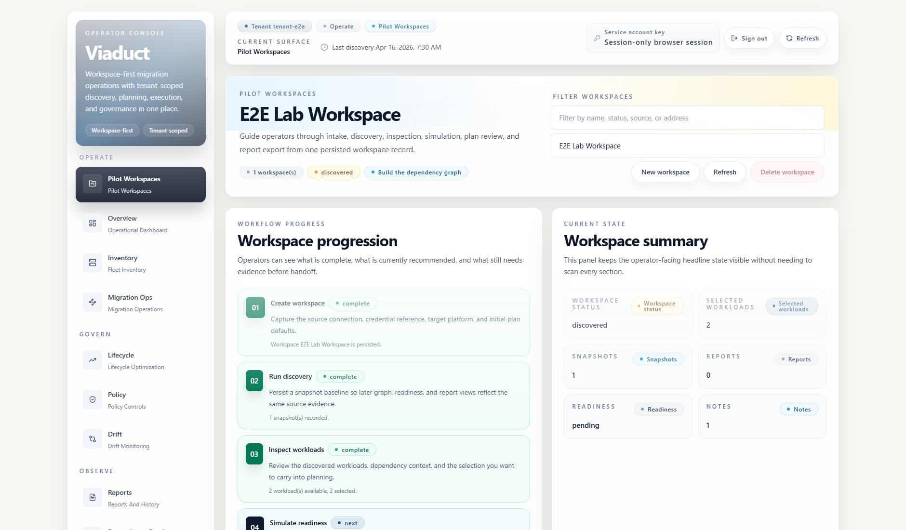
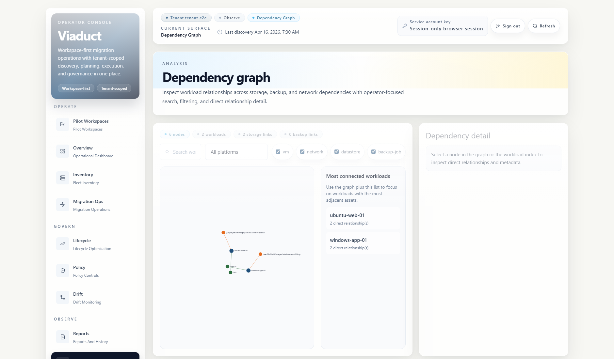
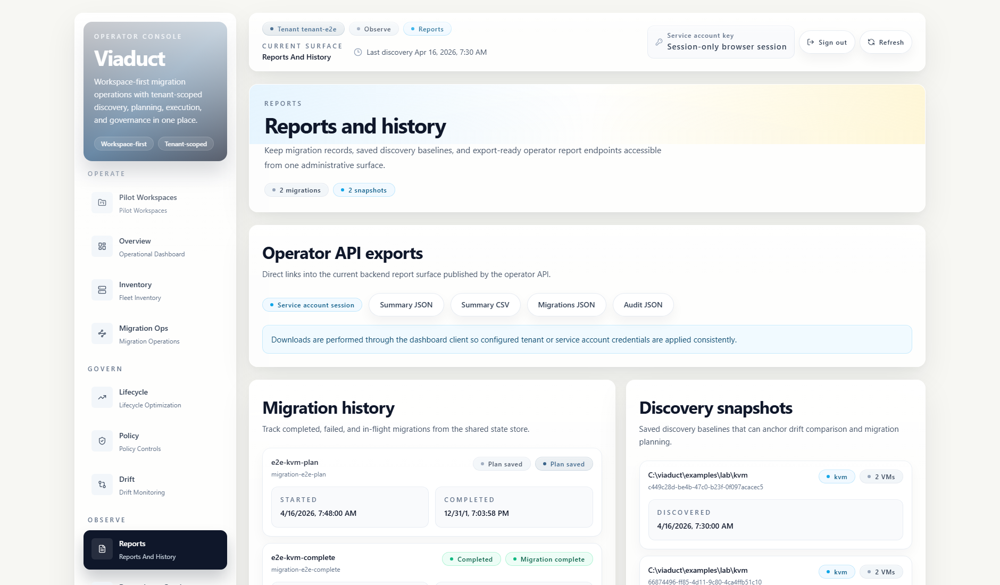

Discover
Collect inventory from the platforms already in your environment.
Open-source migration control plane
Assess, plan, observe, and document virtualization migrations from one shared operator workspace.
Viaduct brings discovery, dependency mapping, migration planning, controlled execution, traceability, and report export into a single Go API, CLI, and React dashboard.
What it is
Viaduct is built for teams that need a trustworthy migration record before anything moves: current inventory, dependencies, policy context, approvals, simulations, execution history, and reports that can be reviewed later.
Golden path
Collect inventory from the platforms already in your environment.
Review dependencies, backup coverage, policy signals, and drift.
Simulate placement, save migration plans, and keep approvals explicit.
Track execution, checkpoints, traces, and exportable reports.
Dashboard
The dashboard is designed around the actual pilot flow: create a workspace, inspect inventory, understand dependencies, simulate changes, and export the evidence package.



Built for controlled work
Viaduct keeps the release path, runtime sessions, tenant isolation, and trace visibility aligned so evaluators can understand what changed and operators can diagnose what happened.
Canonical image publishing includes provenance, SBOMs, vulnerability scans, and cosign verification.
Runtime sessions use server-backed state and service-account friendly tenant controls.
OpenTelemetry spans cover HTTP requests, discovery, planning, exports, and long-running jobs.
Install
The OCI image is the primary production artifact. Native bundles are also published on GitHub Releases for environments that cannot run containers.
docker pull ghcr.io/eblackrps/viaduct:v3.2.0
docker compose -f deploy/docker-compose.prod.yml up -d